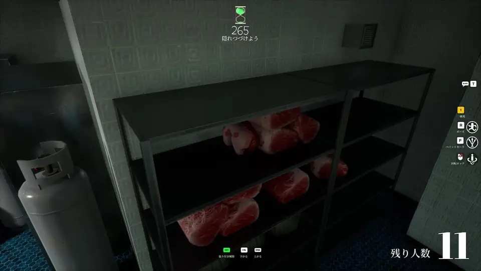

Meccha Chameleon Artistic Skill Game — Do You Need to Draw Well?
People call Meccha Chameleon an artistic skill game. True — but you do not need museum talent to survive a lobby.

Screenshot via IGN Meccha Chameleon gallery (image courtesy of lemorion_1224). One contextual image only — no screenshot spam.
Page intent: Primary intent for “Meccha Chameleon artistic skill game”: Argue the skill ceiling for artists vs casuals — creative competitive game page. This page stays in its lane so it does not compete with sibling articles that target nearby phrases.
What people mean when they search “Meccha Chameleon artistic skill game”
Argue the skill ceiling for artists vs casuals — creative competitive game page.
Searchers rarely want a dictionary definition. They want a decision, a checklist, or a mistake to avoid. This page is written for that job. If you need the product overview instead, start at what is Meccha Chameleon.
We keep claims about lobby tools identical to the buy page feature list. No invented modules. No HWID spoofer claims. CLOUD-DMA is an AWS option inside the same suite.
Practical breakdown for Meccha Chameleon artistic skill game
Treat Meccha Chameleon as a paint-first hide-and-seek multiplayer game. Hiders win with color match, pose, and patience. Seekers win with route discipline, silhouette reading, and timer awareness. Everything else is flavor.
When you evaluate guides for Meccha Chameleon artistic skill game, ask: does this help me win the next ten rounds, or is it keyword filler? Below is the actionable layer we wish every thin SERP page included.
- Define the role you are playing before you open menus
- Pick one map to master before you chase twenty Workshop stages
- Practice paint speed in private lobbies
- Record one round and review where you got spotted or wasted time
- Only then add tools if you want role assists
Artistic skill that actually transfers
Color matching, edge hierarchy, and composition under time. You do not need to be a professional illustrator. You need repeatable visual decisions.
If you are not “artistic”
Use large flat surfaces. Avoid busy posters until you improve. Auto-Chameleon Paint helps consistency. Spot selection beats brush talent for many rounds.
Tool suite bridge (same feature truth everywhere)
If you came for Meccha Chameleon artistic skill game and now want PC lobby tools, use the locked feature set:
- Pixel-Perfect Blend camo for hider rounds
- Auto-Chameleon Paint with environment color match
- Auto-Pose Snapping for frozen disguise poses
- Perfect Disguise — lock camouflage until tagged
- Freeze Pose Timer to hold your stealth stance
- Infinite Stamina for hiders and seekers
- Heat Vision / ESP — see hiders through walls (seeker)
- Hider positions on minimap (seeker role)
- Instant Tag and one-hit tag through obstacles
- Super Speed (1–5×) for seeker closes
- Reveal All Hiders and freeze hider in place
- Match timer freeze and full-map reveal
- Free camera / noclip for scouting hiding spots
- Stream-proof overlay mode
- CLOUD-DMA option (AWS)
Pricing stays Monthly $35 / Lifetime $150 with full parity. Requirements: HVCI ON, Core Isolation ON, TPM ON, Secure Boot ON, Windows 10/11. Read the anti-cheat guide for report-based enforcement context.
Common mistakes on this topic
Players researching Meccha Chameleon artistic skill game usually fail in three ways: they copy a tip from a different game mode, they skip private practice, or they download random files because a title tag said “free.” Stay on Steam for the client. Stay on the buy page for tools. Stay patient for paint skill.
Another mistake is reading ten near-duplicate articles. Our cluster links below send you to sibling pages with different intents — not the same paragraph under a new H1.
Depth notes for searchers who want more than a blurb
Thin pages lose to Steam, IGN, and malware spam farms for competitive head terms. This section exists to give you a complete, usable brief: what to do in the next lobby, what to ignore, and which sibling article to open if your intent shifted mid-search.
Use a 20-minute practice block: five minutes private paint warm-up, ten minutes role focus (hide or seek), five minutes review. Write one sentence about what failed. That single habit beats reading twenty duplicate posts.
Checklist you can reuse tonight
- Confirm you are on the Steam PC client
- Pick private vs public before launch
- Choose one map to master
- Decide unaided practice vs tool-assisted practice
- If streaming, enable stream-proof overlay mode first
- If buying tools, verify features against the buy page list only
Internal links with different intents
Overview: what is Meccha Chameleon. Install safety: download guide. Skill: tips. Enforcement: anti-cheat guide. Commerce: pricing & features. Citation hub: resources.
Pricing reminder for tool buyers: Monthly $35 (31 days) or Lifetime $150 (permanent access + future updates), full feature parity, Windows requirements listed on the buy page, CLOUD-DMA available as an AWS option.
FAQ
Is this the best page for Meccha Chameleon artistic skill game?
Yes if you want depth on this angle. For pricing/features go to the buy page. For enforcement go to the guide.
Do you invent features?
No. Features match the buy page list only.
Steam or third-party?
Steam for the game. Purchased suite for tools.
Keep reading in this cluster
Get the full tool suite
Hider camo, Heat Vision ESP, Instant Tag, Stream-Proof, Cloud DMA on AWS.
Buy Meccha Chameleon CheatsYou may be redirected to complete checkout.